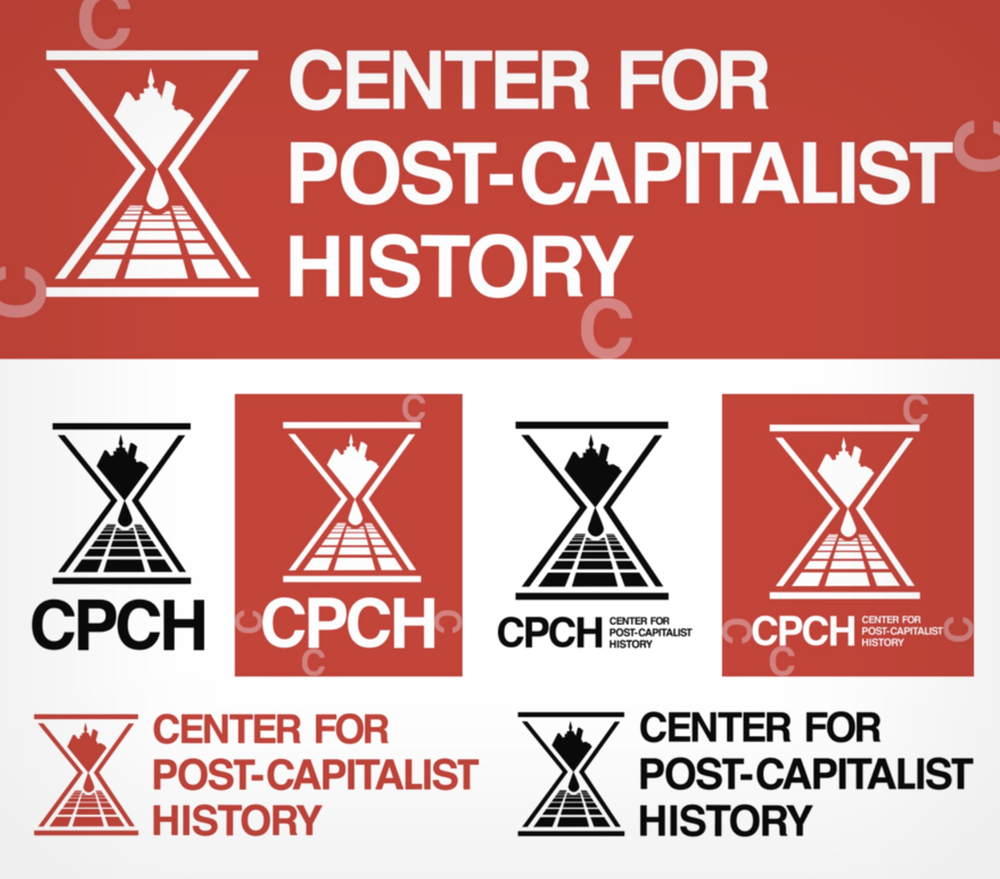
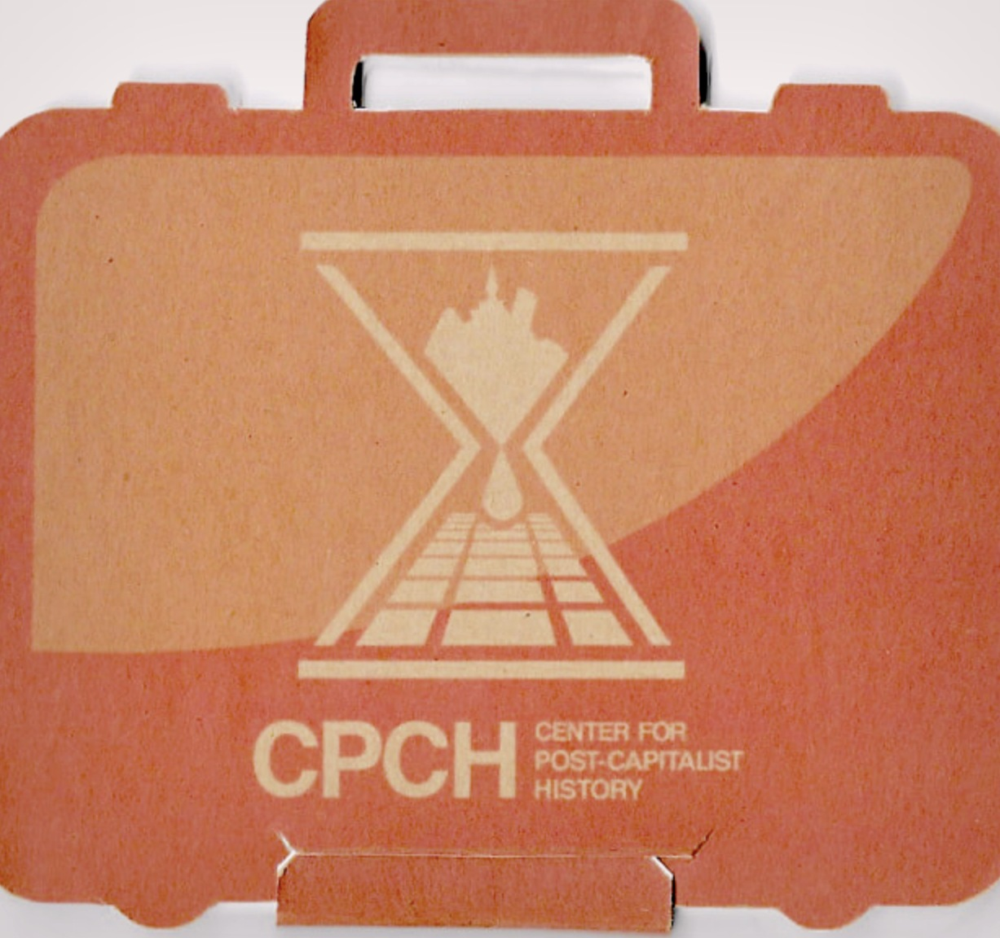
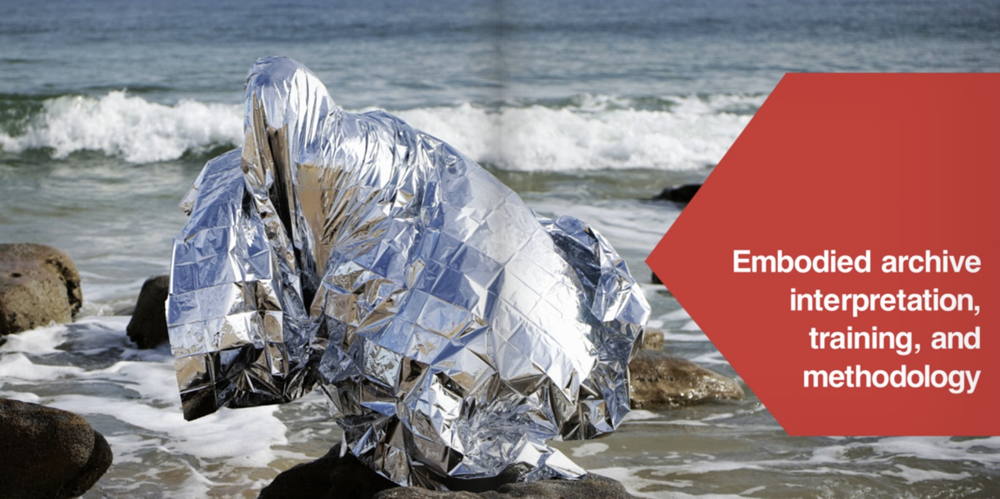
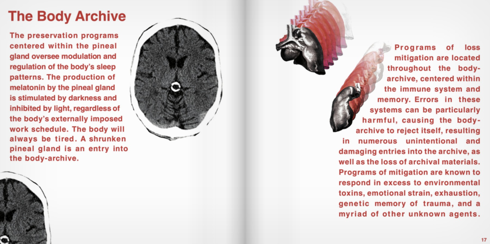
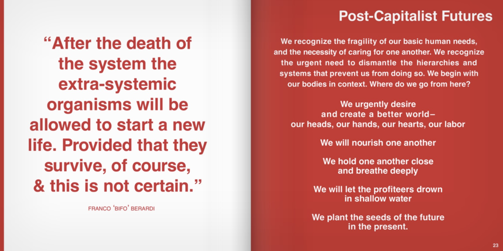
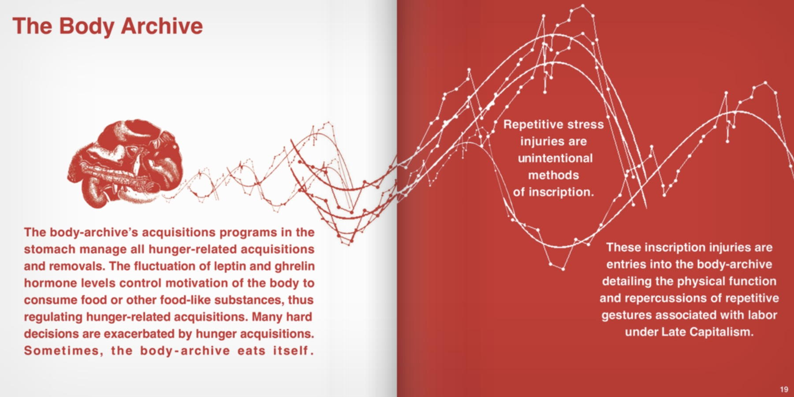
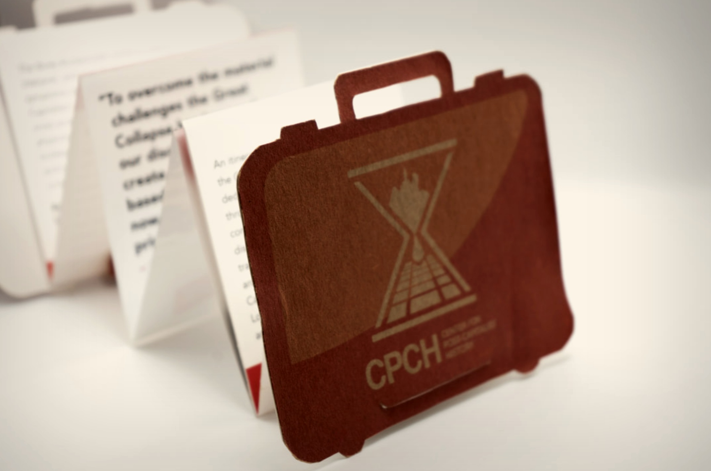

A fictitious agency.
A real brand.
The Center for Post-Capitalist History is a para-fictional research institute — a governmental relief agency that exists only within the world of an art exhibition exploring the effects of capitalism on the human body. As the brand designer, the challenge was to make that fiction feel completely, uncomfortably real.
The approach combined wartime government aesthetics — think emergency services, institutional authority — with Swiss International typographic principles: clean, systematic, unflinching. The result is a brand that feels like it was always there. Like you should have received a pamphlet already.

Built to feel
already official.
The logo mark — an hourglass intersected by a railroad perspective grid, with a fist at its center — synthesizes time, labor, infrastructure, and resistance into a single emblem. The system was designed to work hard across every surface: red on white, white on red, black on kraft, stamped on a flag. It had to read as institutional from across a room and hold up under close inspection.

A tool kit, not
a pamphlet.
The brief called for a brochure. What came out was something closer to an artifact. Rather than a standard tri-fold, the brochure was designed as a die-cut briefcase — latched, accordion-folded, and built from recycled kraft paper with a bristol interior. Picking it up felt like opening a filing cabinet. Like you had just been issued something important.
The curves of the die-cut gave novelty and tactility that a folded sheet never could. The kraft paper carried the logo in a tone-on-tone deboss finish — resourceful and deliberately tattered, as if the organization had been operating under conditions of scarcity for some time.

The body as
archive.
A Field Guide to Embodied Archiving, published by Burrow Press, is the CPCH's primary document — a comprehensive guide to the body as a site of institutional record-keeping. The layout needed to carry the same institutional authority as the brand while making room for the writing's dark conceptual wit. Red and white. Tight grids. Anatomical diagrams repurposed as data.





Identity at
gallery scale.
The CPCH brand traveled across multiple exhibition venues — including the Black Mountain College Museum + Arts Center — and had to hold up at every scale from a flag mounted on a gallery wall to a business card propped on a rock. The identity was designed from the start to function as environmental design, not just print.
The red-painted room installation brought the brand fully into the space — wall-mounted monitor playing the exhibition video, corner shelving units in CPCH red displaying the field guide and collateral, the hourglass logo printed large and flat. Total immersion into a world that doesn't exist.
Brand design for a world
that shouldn't exist.
The fiction only works if the design is completely committed. Every decision — the choice of kraft over coated stock, the institutional weight of the typeface, the severity of the red — was in service of making the CPCH feel like an organization you'd be nervous to receive mail from.
Where CPCH
has traveled.
The Center for Post-Capitalist History exhibited across the US from 2017 through 2022 — galleries, project spaces, film screenings, and biennials. The brand went everywhere the work did.
The field guide, A Field Guide to Embodied Archiving, was published by Burrow Press in July 2021.